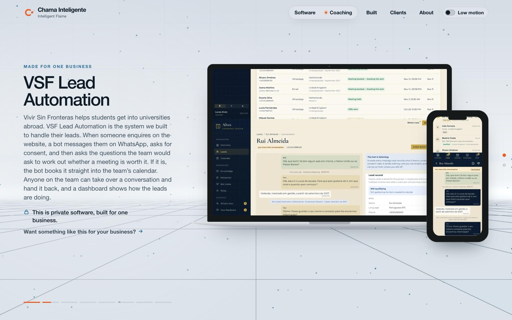
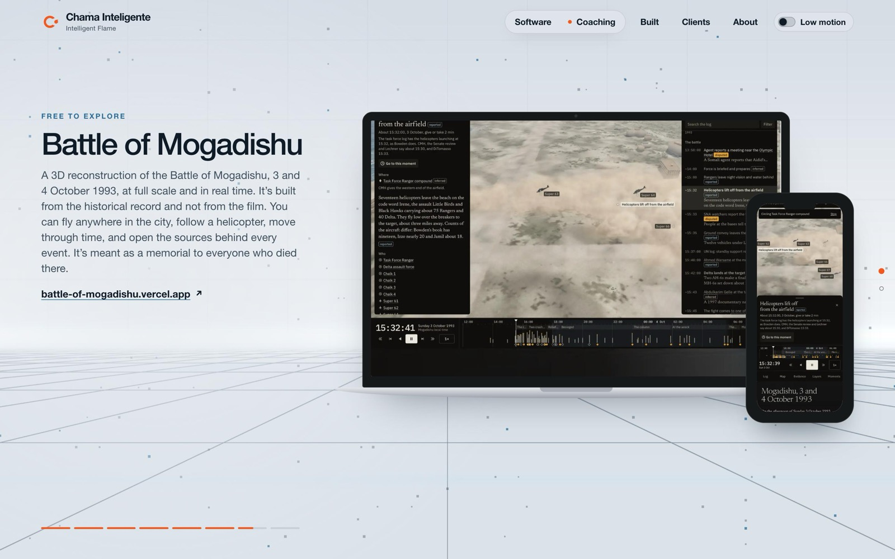
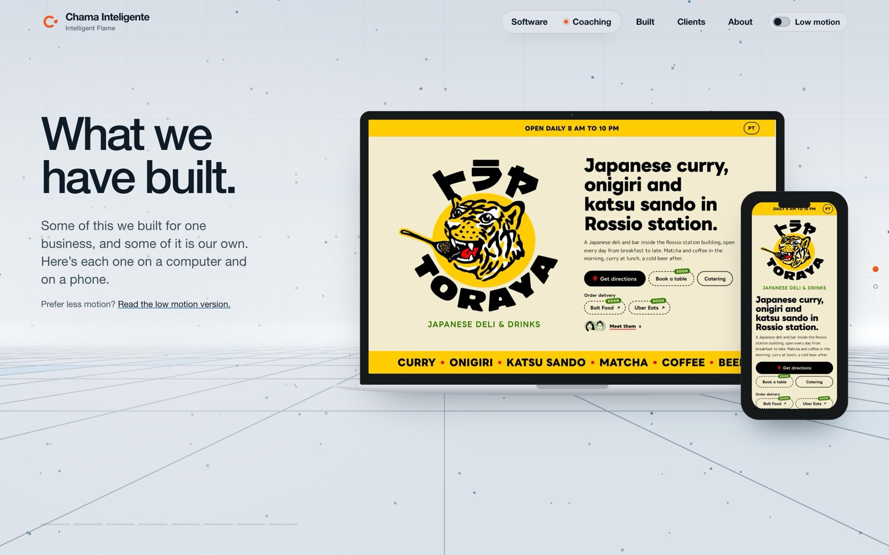

The site now has a page for the things we have built, at chamainteligente.com/built. Each one is shown on a laptop and a phone whose screens scroll as you scroll. Merged as PR #180 on 2026-11-11.
8 things on the pageChecked live on desktop and phone2 independent reviews, findings fixed4 things left for you
The live page
On a computer. Recorded from production, scrolling from the opening to ShopIntake.At your phone's size.
What is on it
Toraya LisboaMade for one business
VSF Lead AutomationMade for one business, private
Alves TeamwearMade for one business, private
ShopIntakeOur own product
View the PlaceOur own product
The HearthOur own product
Battle of MogadishuFree to explore
aimade.gamesFree to play
Three views

VSF Lead Automation. The command center itself, filled with made-up demo leads.

Battle of Mogadishu. Captured inside the live 3D scene.

The opening. Reached from the new Built link in the header.
How it was checked
Every product shows and scrolls on the live site, on desktop and at 364 by 610 with your larger text
No requests to any other host from the page
Words never touch the devices, the header or the progress bars, at four screen sizes
Five header links fit on one row on your phone, on every page
A link to one product, like /built#shopintake, lands on it
The low motion page and the page without JavaScript both list all eight
The whole test suite passes, with new tests for this page
Sitemap and llms files updated, and search engines notified
Left for you
Aydin's nameView the Place doesn't name him yet. Tell me when he has agreed and I'll add the sentence back.
Teamwear picturesThey come from the project's own report screenshots. Look them over once, since they show team names from its demo data.
The flameThe chat doesn't know these products yet. "Want something like this for your business?" opens it with the same message the Clients page uses. Teaching it means a reviewed prompt change and a paid evals run.
Links into the pageThe home page and Clients page reach Built only through the header. A home page section and a link from each client were in the proposal and aren't built.